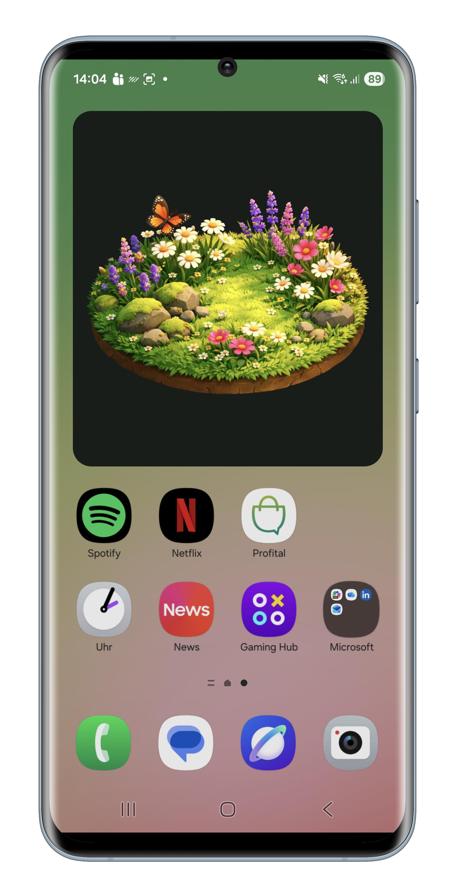
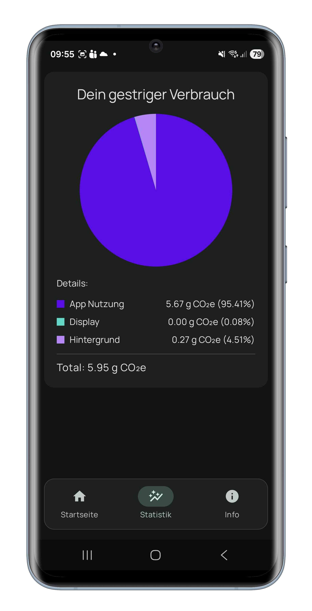

What is the Digital Footprint Explorer?
The Digital Footprint Explorer (DFE) is a research-driven mobile application developed at the Zurich University of Applied Sciences (ZHAW). It helps make the normally invisible environmental impacts of everyday digital activities—such as messaging, social media use, video streaming, and cloud-based AI—more tangible and understandable.
DFE visualizes these impacts using an intuitive and emotionally engaging metaphor: a living digital garden. When a user's mobile data usage is low, the garden flourishes; when usage increases significantly, the garden gradually deteriorates. This gentle form of eco-feedback encourages reflection and supports more mindful digital habits without relying on guilt or numerical overload.
How to Use
DFE is currently availabel for Android. It can be downloaded for free on Google Play. Scan the QR code to get the app:
After downloading, open the Digital Footprint Explorer app. It will ask you for permissions to access usage data and to run as a foreground service. It will also offer you to place a widget on your homescreen. When opening the app (or tapping the widget), you can see detailed statistics about your environmental footprint.


Data Privacy & On-Device Processing
Data protection and privacy-by-design are core principles of the Digital Footprint Explorer.
- The app requests permission to access usage statistics on your mobile phone in order to estimate data transmission volumes.
- All data is processed locally on the device. Environmental impact estimates are computed on the phone itself.
- No personal or usage data is transmitted to external servers, clouds, or third parties.
The Digital Footprint Explorer does not track users and does not send any data anywhere outside the device.
Contact
If you have questions, feedback, or research-related inquiries, please contact the DFE team: